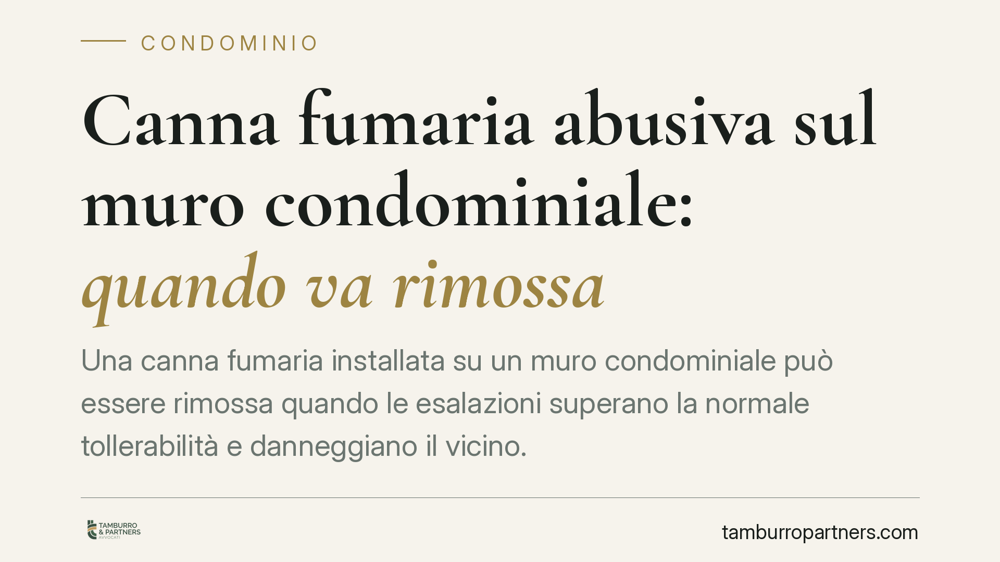

Canna fumaria abusiva sul muro condominiale: quando va rimossa
Una canna fumaria installata su un muro condominiale può essere rimossa quando le esalazioni superano la normale tollerabilità e danneggiano il vicino. La Cassazione applica in questi casi un doppio criterio: uso legittimo del bene comune e limite alle immissioni. Vediamo come funziona e quali passi servono a tutelare chi subisce il disagio.

Il problema tipico
Un ristorante o una pizzeria installa una canna fumaria lungo la parete condominiale. Gli odori e i fumi raggiungono le finestre degli appartamenti sovrastanti. Il condomino chiede la rimozione; l'esercente oppone la necessità dell'impianto per la propria attività. È uno dei conflitti più frequenti tra esigenze economiche e diritto ad abitare in modo salubre.
La giurisprudenza affronta la questione su due piani distinti, che conviene tenere separati.
Inquadramento normativo
Il primo piano riguarda l'uso del bene comune. Il muro perimetrale è di norma parte comune dell'edificio (art. 1117 c.c.). Ogni condomino può servirsene, ma senza alterare la destinazione della cosa e senza impedirne l'uso agli altri (art. 1102 c.c.). L'installazione di una canna fumaria che occupi stabilmente la parete, se non autorizzata o se altera il decoro e la funzione del muro, può risultare illegittima già su questo terreno.
Il secondo piano riguarda le immissioni. L'art. 844, secondo comma, c.c. vieta le immissioni – tra cui fumi ed esalazioni – che superano la *normale tollerabilità*. Si tratta di un parametro elastico: non fissa una soglia numerica valida sempre, ma va calibrato sulle condizioni dei luoghi, sulla destinazione della zona e sull'attività svolta.
Su questo parametro incide un principio consolidato: quando le immissioni pregiudicano la salute, il diritto tutelato dall'art. 32 della Costituzione prevale sulle ragioni produttive. In altri termini, l'interesse economico dell'attività non può giustificare esalazioni che compromettono il benessere psicofisico di chi abita nell'edificio. È l'orientamento seguito dalla Corte di Cassazione nelle controversie in materia di immissioni moleste.
Le implicazioni pratiche
Per il condomino che subisce il disagio, questo significa che due strade possono condurre alla rimozione dell'impianto. La prima è l'abusività dell'installazione sul bene comune. La seconda è il superamento della soglia di tollerabilità delle immissioni. Le due domande possono coesistere e rafforzarsi a vicenda.
Attenzione però al profilo probatorio. La percezione soggettiva del fastidio, da sola, non basta. Occorre dimostrare che le esalazioni eccedono la normale tollerabilità in relazione al contesto concreto. Non è sempre indispensabile una misurazione strumentale: il giudice può fondare il proprio convincimento su una consulenza tecnica, su testimonianze qualificate e sulla valutazione complessiva delle circostanze. Ma la prova deve essere solida e documentata, non generica.
Per il titolare dell'attività commerciale, il messaggio è speculare. La regolarità amministrativa dell'esercizio – licenze, autorizzazioni sanitarie – non mette al riparo dall'azione civile del vicino se l'impianto genera immissioni intollerabili o insiste illegittimamente sul muro comune. La conformità edilizia e quella civilistica viaggiano su binari separati.
Cosa fare in concreto
- Documentate il disagio nel tempo. Annotate date, orari e circostanze delle esalazioni. Raccogliete fotografie, eventuali segnalazioni e la testimonianza di altri condomini interessati.
- Verificate i titoli. Controllate se l'installazione sulla parete comune è stata autorizzata dall'assemblea o se difetta di titolo. Recuperate i verbali e il regolamento condominiale.
- Tentate prima la via stragiudiziale. Una diffida formale o una mediazione possono risolvere il conflitto senza contenzioso, spesso in tempi più rapidi.
- Valutate una consulenza tecnica. Un tecnico può stimare l'entità delle immissioni e verificare la conformità dell'impianto, fornendo la base per un'eventuale azione.
- Considerate l'incidenza sulla salute. Se il disagio ha ripercussioni documentabili sul benessere degli occupanti, il profilo dell'art. 32 Cost. rafforza sensibilmente la posizione.
Un'avvertenza sul metodo
La valutazione della normale tollerabilità è per definizione casistica: dipende dai luoghi, dall'intensità delle esalazioni e dalle condizioni specifiche dell'edificio. Data questa natura, è opportuno un esame tecnico-giuridico della singola fattispecie prima di avviare qualsiasi azione, così da individuare la strada più coerente con le prove effettivamente disponibili.
---
*Contributo informativo a cura di Tamburro & Partners Avvocati. Non costituisce parere legale.*
Ogni condominio ha una storia a sé.
Se gestisci un'amministrazione e vuoi un confronto su una specifica questione condominiale, scrivi allo studio. Ti rispondiamo entro un giorno lavorativo.